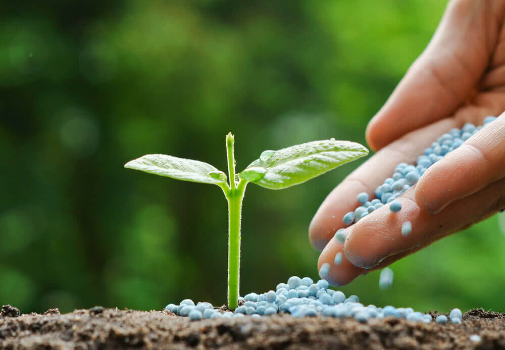
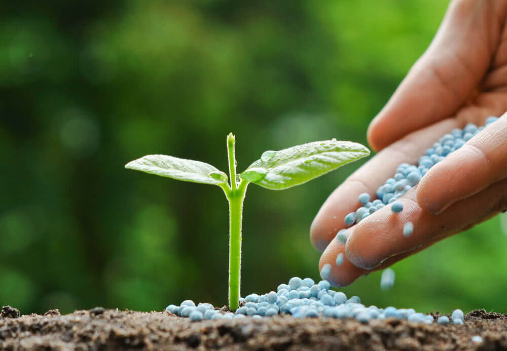

Welcome to croptimizer your trusted partner in optimizing
fertilizer use for healthier crops and a healthier planet.
Fertilizers play a crucial role in modern agriculture, providing
vital nutrients that plants need to thrive. But applying
fertilizers effectively is a delicate balance.
 
